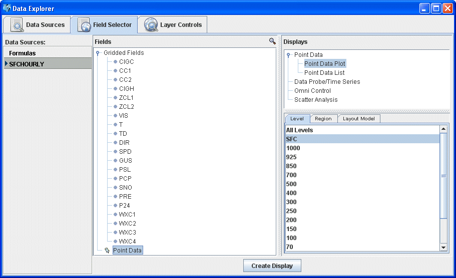
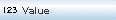

Displaying METAR and Synoptic Data
This section describes how to make station model displays using surface data,
and make and edit station model layouts.
The steps include:
Selecting Surface Observations from a Remote Server
In the Data Sources tab in the Data Explorer select Plot under the "Point Observations" source. For more information about the Surface Plot chooser, see Choosing Point Observation Data.
In the Server: and Dataset: entry boxes, use
the pulldown lists to select a remote server and a dataset with METAR data,
such as adde.ucar.edu and
RTPTSRC. You can also type a different server name into the
entry box. Click on Connect to find data on the remote server.
In the Point Type: selection
box choose "Real-Time SFC Hourly." You can choose either the latest N times
or select specific time. Select the times you would like to view (note: multiple
times may be selected with the Shift and Control keys) as well
as the interval. Click on Add Source when you have made your
selection.
Creating the Display
The surface observation data will be shown in the Field Selector tab.

Select "Point Data" in the Fields panel and select "Point Data Plot" in the Displays panel. Make the display by clicking on the Create Display button on the bottom of the Field Selector tab.
To declutter the display, use the Station Model Controls in the Layer Controls tab.
The "Gridded Fields" tab allows you to use the Barnes analysis to create gridded fields of the point observations.
Creating and Editing Station Model Layouts
You can create or edit your own station model layouts by using the Station
Model Editor. To access the editor, click on the double down arrow ( )
and select Edit under the Layout Model: section
in the Layer Controls tab
or select Tools->Parameters->Plot Configurations from
the main menu. The display shows a set of axis lines which give a reference
point to all the parameters in the model. The station model consists of a
set of shapes which are added by clicking on an item in the left column and
then clicking where you want to place it. When a shape is created, a property
dialog box is shown which allows you to control its appearance, as well as
delete an item, set its color, change font sizes, view its properties, etc.
)
and select Edit under the Layout Model: section
in the Layer Controls tab
or select Tools->Parameters->Plot Configurations from
the main menu. The display shows a set of axis lines which give a reference
point to all the parameters in the model. The station model consists of a
set of shapes which are added by clicking on an item in the left column and
then clicking where you want to place it. When a shape is created, a property
dialog box is shown which allows you to control its appearance, as well as
delete an item, set its color, change font sizes, view its properties, etc.
- Create a new station layout model by selecting File -> New and entering in a layout name.
- Select the  Value shape and left-click on the model layout space to add the shape.
- A property dialog box will pop up. Under the Display tab,
change the Parameter value to temperature. To do this, delete
the default "value" in the entry box, select TEMP from the dropdown
list by clicking on the
 arrows
and selecting Aliases->Group 1->Temperature (TEMP).
arrows
and selecting Aliases->Group 1->Temperature (TEMP).
- Optionally, change the default unit to be displayed, the font size, or other
variables by using the pulldown menus. To change the foreground or background
color, click on the color swath to bring up a pallet of swatches to choose
from, as well as the option to choose a color by HSB (hue, saturation, and
brightness) or RGB (red, green, and blue). When finished, click OK.
- To move the location of the shape, left-click and drag the icon to a new location. You can change the alignment of the shape by right-clicking and selecting Alignment Point->Choose an alignment point.
- Follow steps 2-5 to add dewpoint temperature (Aliases->Group 1->Dewpoint) to the station layout model.
- Select the Windbarb shape and left-click on the model space to add the shape.
- The property dialog box will pop up. Change the U or windspeed parameter to Aliases->Group 1->Wind Speed (SPEED) and the V or direction parameter to Aliases->Group 1->Wind Direction (DIR).
- If you choose to, edit the other parameters. When done, click OK.
- Save your layout by selecting File->Save. You can edit or access other station layout models by selecting one under the Layout Models menu. User created or edited models will have "<local>" after the name.
- Close the station layout model editor by selecting File->Close.